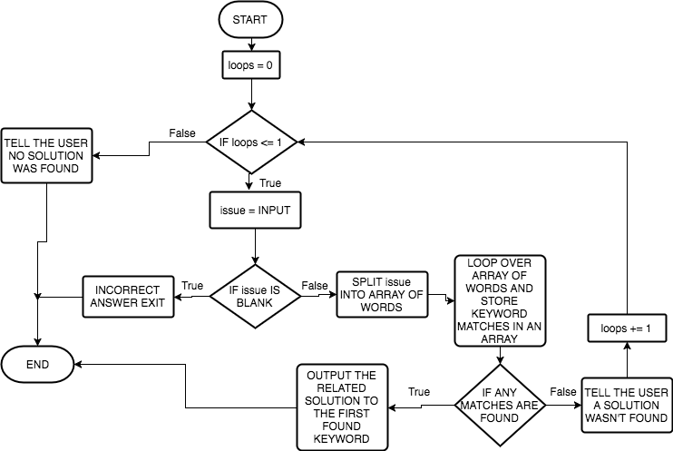

Analyse the requirements for this system and design, develop, test and evaluate a program to identify keywords in a query typed in by the user and provide a linked solution to common problems related to a mobile device from a selection stored in a text file or database. You will need to identify appropriate keywords that can be linked to general advice related problems. You need to account for variations in the form of the user input e.g. one user may query ‘There is no display on my mobile phone’, another user may query ‘My phone screen is blank.
So, I need to develop a program where in which the user can find an answer to an issue to do with their phone that they can
type as they please.
This program needs to incorporate a mechanism that cross references words within the users issues with predefined keywords
and outputs a relavent solution.
The first question I need to ask myself is what components of my programming knowledge am I going to have to use to develop this
program. I wrote a short list in my notebook in real life, here's what i wrote:
For my planning I've made a flowchart and also written some basic outline pseudocode to help display and demonstrate how my program will
function and what basic logic it will follow.
Here's my flowchart:

And here's my pseudocode:
keywords = {
'smashed' : 'Please take your phone to the nearest repair shop',
'charging' : 'Try cleaning out your charging port on your phone by blowing into it',
'screen' : 'Please take your phone to the nearest repair shop',
'wet' : 'Please take your phone to the nearest repair shop',
'water' : 'Please take your phone to the nearest repair shop',
'slow' : 'You may need to upgrade your phone',
'audio' : 'Try hard resetting your phone',
'sound' : 'Try hard resetting your phone',
'home' : 'Please take your phone to the nearest repair shop'
}
loops = 0
while loops <= 1 do
issue = input('What is your issue?') -> to lowercase
if issue -> stripped == '' then
print('incorrect answer')
exit()
else then
words = issue -> split
matches = []
for word in words do
if word in keywords then
matches -> append(word)
else then
continue
if len(matches) > 0 then
print('Solution: '+keywords[matches[0]])
exit()
else Then
if loops == 0 then
print('Sorry, we do not have a solution for the given issue, please try again.')
else then
break
loops += 1
print('Sorry, we could not find a solution for you.')
Here's my commented end code:
https://gist.github.com/iJamesPHP/d918783d24acb912feb2fc70cdec68bf
In this section I'll describe the different aspects of my program, how they work and why I've chosen to do it that way.
sysp(), I use this function instead of the print() function so that I can always
add the same prefix to all my outputs and structure them nicely.
sysinp(), this function is to add the same prefix as sysp() to input messages.
solution() that prints out a given solution and exits the program.
| Feature | Scenario | Data Used | Expected Outcome | Actual Outcome | Evaluation |
|---|---|---|---|---|---|
| Handling multiple keywords sensibly | A user's issue has more than 1 keyword present | Typing 'my phone screen has water in it' as the issue | To be told to take it to the nearest repair shop | I was told to take it to the nearest repair shop | This feature is "working" in my program. It's behaving as I expected but I may want to make solutions more accurate in the future by using multiple keywords. |
| Handling illegal input | Inputting a blank issue | Typing '' as the issue | To be told it's an incorrect answer and to exit | I was told it was an incorrect answer and the program exited | This feature is working in my program |
| Always giving a solution | Having an unsolvable issue | Typing 'milk' as both issues | To be told there is no solution and to try again after the first issue and then to be told there is no solution and exit the program after the second issue | I was told there is no solution and to try again after the first issue and then i was told there is no solution and the program exited after the second issue | This feature is working in my program |
| Tailoring solutions based on keywords | The user's phone is smashed | Typing 'my phone is smashed' as the first issue | To be told to take it to the nearest repair shop | I was told to take it to the nearest repair shop | This feature is working in my program |